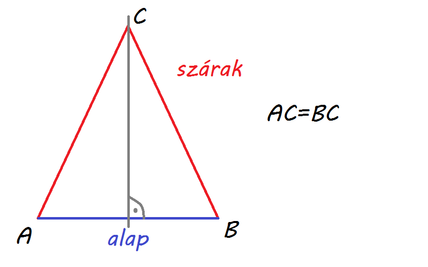
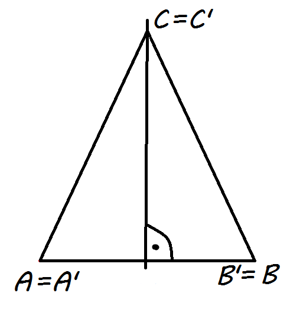

bizonyítás:

A Szakasz felező merőleges azon pontok halmaza amelyek a két végponttól egyenlő távolságra vannak.
oldalfelező merőleges = szimetria tengely

következmények:
-az alapon lévő szögek egyenlőek
-a szimetria tengely felezi a C csúcsnál lévő szöget
-a szimetria tengely a c oldal magasságvonala, oldalfelező merőlegese és súlyvonala
-az egyenlő oldalú háromszögnek 3 szimetria tengelye van